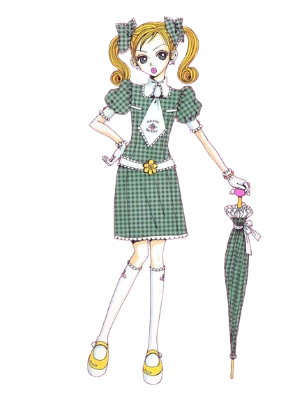

Vista a sua própria história.
Peças autorais que misturam alfaiataria leve, cores doces e detalhes lúdicos — para quem quer se vestir como protagonista do próprio dia. Cada coleção é assinada por Mikako Kouda.

Coleção Sugar Drop
by Mikako Kouda
Por trás da Happy Berry está Mikako Kouda.
Mikako sempre desenhou as próprias roupas — primeiro para si, depois para amigas, até transformar isso em uma marca própria. A Happy Berry nasceu dessa vontade de criar peças que tivessem identidade, cor e personalidade, sem abrir mão do acabamento profissional.
A Happy Berry é a marca nº 01 do ecossistema AKINDO — selecionada pela curadoria por sua identidade visual consistente e qualidade de acabamento.